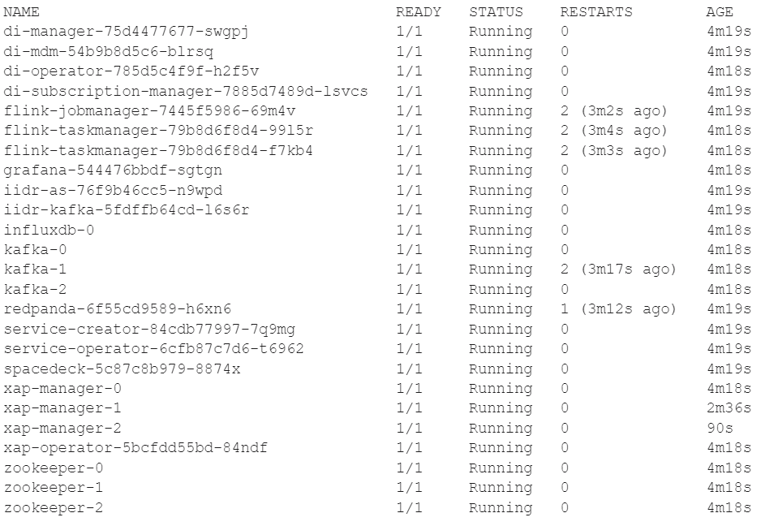

This is an installation guide for Smart DIH in H/A mode. Upon completion of this guide, the user will have a functional Smart DIH together with the ability to operate is using the SpaceDeck UI
.
Smart DIH is protected by license. The initial step of this installation is signing up and agreeing to the terms and conditions found in the Free Trial (Smart DIH) link found at the top of each page of the documentation site. After signing up, you will receive a token. This token should be used, when requested, in the installation steps below.
Following are the prerequisites required for deploying Smart DIH using Kubernetes.
Kubernetes cluster version >1.22
At least a total of 20GB and 10 vCPU
Kubectl Controller installed and configured:
Ingress controller installed (see Appendix A)
A load balancer that is securely exposed to the internet and connected to the ingress controller
DNS setup with a certificate for a secure connection. The instructions below assume the host name to be myhost.com.
Use the token provided by
Kubectl apply -f gsSecret.yaml -n dih
helm repo add dih \ https://s3.amazonaws.com/resources.gigaspaces.com/helm-charts-dih helm repo update dih
Fully install Smart DIH:
helm install dih dih/dih -n dih --version 16.3.0-m10 \ --set spacedeck.ingress.enabled=true, spacedeck.ingress.host=myhost.com, tags.iidr-true
Smart DIH is now installed in H/A mode. The following pods should be up and ready:

Connect to the SpaceDeck at https://myhost.com/
Install the agent for the required data sources:
Use SpaceDeck to define spaces, data sources and pipelines.
An ingress controller is required as part of the Smart DIH installation. Instructions for NGINX controller installation can be found through this link:
https://docs.nginx.com/nginx-controller/admin-guides/install/install-nginx-controller/